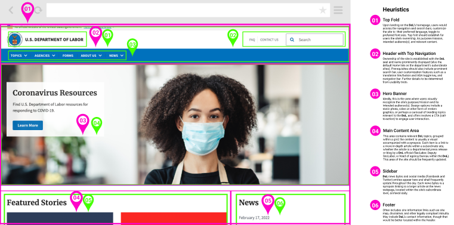

Heuristic Evaluations
The initial heuristic review of the home page reveals numerous IA infractions that warranted the DOL’s mediocre benchmark ranking. The current page’s design is workaday, with neither a discernable color scheme nor meaningful images to engage the visitors’ interest. The hero image is stale (unchanged after at least six months) and somewhat off-putting; Navigation is unwieldy, hindering users from obtaining requested content quickly. On the plus side, pages load quickly and the top alert assures visitors that the website is an official government website, therefore securing sensitive information users may provide.
Redlined UI annotations
I analyzed, redlined, and annotated the UI areas on the homepage where changes may occur in the redesign. Quick Links (#7), in particular, is key to a more manageable and convenient user flow throughout the website. However, much of the content below the fold (#9–17) shall be either relegated to a sublevel page or eliminated for a more streamlined homepage.